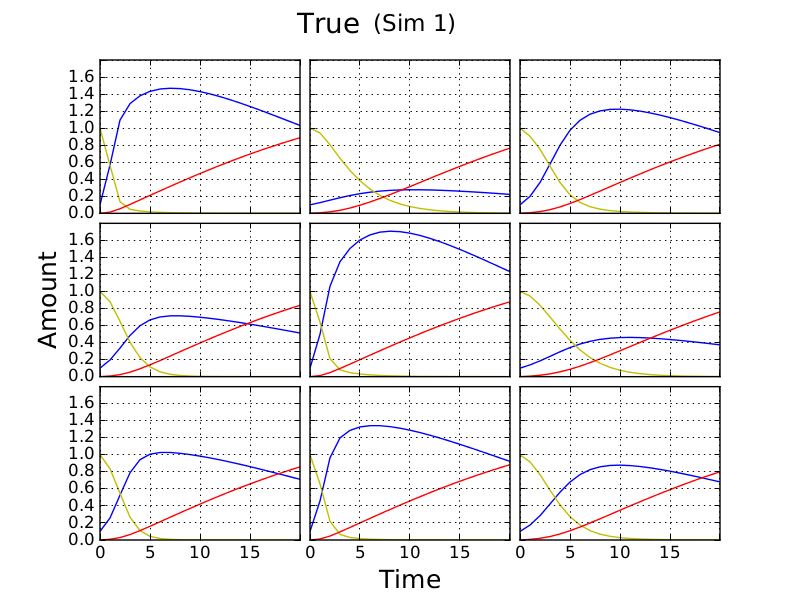
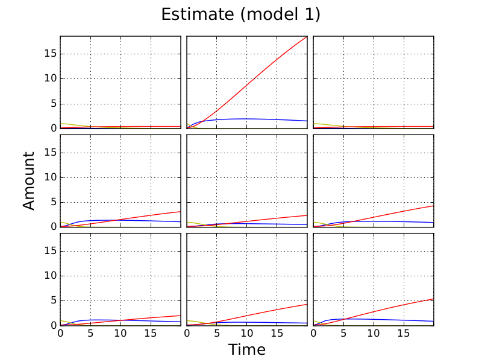
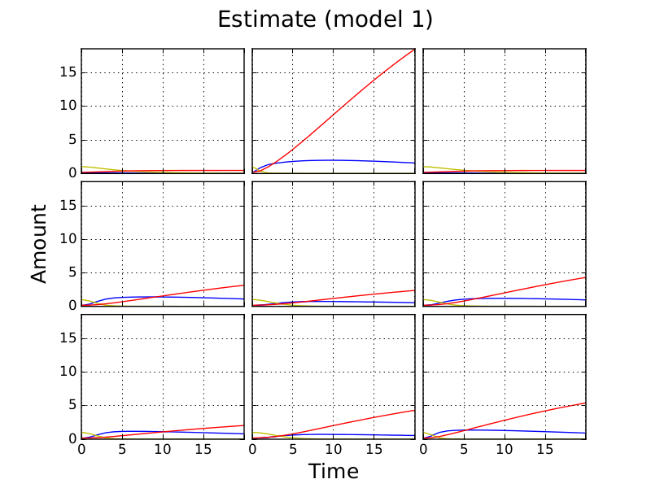

Least squares fit of simulated time-courses
Outline
Here I look at least squares fits of the CANS model to simulated CANS data. I do this for two simulations of a 3x3 plate. In the first all cultures have non-zero growth constants (ri); in the second some of the cultures have zero growth constant. Of the three curves plotted, only the amount of cells (blue) is used to recover parameters. Simulations contain 21 time-points. This is an attempt to keep fitting relevent to the data we will be using.
In the simulations rate constants are drawn from a N(1, 1) distribution. I set other parameters manually.
I compare the perfomance of two fitting approaches. The first allows constants for the secretion of signal by cells \((\beta)\) and the effect of signal on cells \((\alpha)\) to vary beteen cultures; the second does not.
The fixing of other parameters is sumarised below.
Plate level:
- C(t=0) - Initial cell amount
- N(t=0) - Initial nutrient amount
- S(t=0) - Initial signal amount
- kn - Nutrient diffusion constant
- ks - Signal diffusion constant
Culture level:
- ri - Growth constants
Parameter Values and Initial Guesses:
| Parameter | Value | Initial guess |
|---|---|---|
| C(t=0) | 0.1 | 0.2 |
| N(t=0) | 1.0 | 0.2 |
| S(t=0) | 0.0 | 0.0 |
| kn | 0.1 | 0.05 |
| ks | 0.1 | 0.15 |
| \(\beta\) | 0.05 | 0.05 |
| \(\alpha\) | 0.05 | 0.05 |
| r | (see below) | 1.0 |
| Parameter | Value Sim 1 | Value Sim 2 |
|---|---|---|
| r0 | 2.12038296 | 0.0 |
| r1 | 0.23529426 | 2.70508608 |
| r2 | 0.71800327 | 0.0 |
| r3 | 0.70340588 | 1.33112558 |
| r4 | 1.89093006 | 0.66875854 |
| r5 | 0.32824214 | 0.96721998 |
| r6 | 1.02039575 | 1.22867934 |
| r7 | 1.77496177 | 0.64268857 |
| r8 | 0.57991352 | 2.09978633 |
Non-zero ri
Plots of simulation 1 and fitting:


Deviations of fitted parameters:
| Parameter | Deviation Model 1 | Deviation Model 2 |
|---|---|---|
| C(t=0) | 0.0020385744 | 4.21348985868E-007 |
| N(t=0) | 0.0173966107 | 1.35868377105E-006 |
| S(t=0) | 0.0256967688 | 7.27393393862E-006 |
| kn | 0.0034546308 | 1.53308832754E-007 |
| ks | 0.0065764685 | 2.6762262845E-006 |
| \(\beta\) | 0.0094500157 | |
| \(\alpha\) | 0.0116516464 | |
| \(\beta\) (MAD) | 0.098591232 | |
| \(\alpha\) (MAD) | 0.0322358689 | |
| r (MAD) | 0.0338617287 | 4.29413653051E-006 |
Here we find that parameter fitting is more accurate for model 2 where \(\alpha\) and \(\beta\) are plate level.
Zero-value ri
Plots of simulation 2 and fitting:
 

Deviations of fitted parameters:
| Parameter | Deviation Model 1 | Deviation Model 2 |
|---|---|---|
| C(t=0) | 0.0028789924 | 0.0282316976 |
| N(t=0) | 0.0282431081 | 0.1812336171 |
| S(t=0) | 0.1646590344 | 0 |
| kn | 0.0051864629 | 0.2120190497 |
| ks | 0.1 | 0.05187543 |
| \(\beta\) | 0.05 | |
| \(\alpha\) | 0.05 | |
| \(\beta\) (MAD) | 0.2544472169 | |
| \(\alpha\) (MAD) | 0.2208869765 | |
| r (MAD) | 0.1572653337 | 0.6894003751 |
Both models have more trouble fitting plates where some cultures have zero growth constant. Model 1 finds a local minimum where diffusion constant ks is zero and \(\beta\) and \(\alpha\) vary a lot between cultures; model 2 finds a local minimum where \(\beta\) and \(\alpha\) are both zero and no signal is ever produced. Estimates of growth constant (r) are actually worse in model 2 where there are fewer free parameters. It may be possible to get a better fit with model 2 using different parameter guesses.
Fits would likely be better for different true parameter values. In particular signal diffusion (controlled by ks) occurs quickly in the simulations such that levels of signal are very similar in all cultures.
Summary
In the first example, with non-zero growth constants, fits are better for plate level \(\beta\) and \(\alpha\).
Where there are zero value growth constants, both models have trouble producing accurate fits. In the example studied, fits with plate level \(\beta\) and \(\alpha\) were actually worse, although this may not be true in general. We could determine this with simulations.
Better fits may be obtained using different starting parameters or in cases where true parameters (besides r) are different.
Parameter estimates may be better of worse for larger plates and we should check this. If we let \(\beta\) and \(\alpha\) vary from culture to culture we have many more free parameters. If we fix \(\beta\) and \(\alpha\) at the plate level then we have more information to determine parameters.
We should also compare how well the independent model recovers growth constants.
Comments